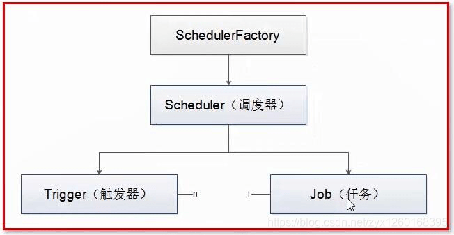

企业日常工作中需要制作大量的报表，比如商品的销量、销售额、库存详情、员工打卡信息、保险报销、办公用品采购、差旅报销、项目进度等等，都需要制作统计图表以更直观地查阅。但是报表的制作往往需要耗费大量的时间，即使复用制作好的报表模版，一次次周期性对数据的复制粘贴操作也很耗人，同时模版在此过程中也会逐渐变得面目全非。
Origin: https://www.grapecity.com.cn/blogs/spreadjs-realize-excel-report-automation-from-0
Official address: https://www.grapecity.com.cn/developer/spreadjs/industry/lims
一、项目背景
企业日常工作中需要制作大量的报表，比如商品的销量、销售额、库存详情、员工打卡信息、保险报销、办公用品采购、差旅报销、项目进度等等，都需要制作统计图表以更直观地查阅。但是报表的制作往往需要耗费大量的时间，即使复用制作好的报表模版，一次次周期性对数据的复制粘贴操作也很耗人，同时模版在此过程中也会逐渐变得面目全非。
基于此，我们需要挖掘数据背后隐藏的关联信息，将人工的常规性操作抽离出来，使用工具和代码去实现，这个过程就称之为报表自动化。葡萄城表格技术产品 纯前端表格控件 SpreadJS 和 服务端表格组件 GcExcel 高度兼容 Excel，可不依赖任何第三方组件实现 Excel 文档的导入导出，并提供类 Excel 的使用体验，可满足自动化报表中报表模板的批量处理、批量修改、数据汇总、批量浏览、打印、转换等各项功能开发需求。
二、报表自动化的优势
报表自动化带来的价值有哪些呢？
节省时间，提高效率
身处信息爆炸的时代，任何一家企业都有体量庞大、结构复杂、各种各样的数据，多类数据交互融合，对其进行分析经常伴随着大量人力资源的消耗。自动化报表通过合理的设计，独立出各个业务功能模块，后续重复引用该模块，实现重复操作的代码复用。
对于固定流程或逻辑的一些操作，计算机的执行速度是人力不可及的，为我们节省了时间，可以投入更有意义的工作。
降低出错率
人工操作总是受太多不可控因素影响，存在各种出错的潜在可能。与之相比，自动化意味着通过编码手段实现了持久化的逻辑、流程，经过重复的测试验证之后，便可完全信任该程序。在重复性的工作场景下机器产出的稳定性远高于人工操作。
时效性高
日报、周报、月报这种周期性的报表，人为操作很难控制时间的准确性，但是通过代码控制可以最大程度的保证其定点触发操作。
三、系统功能点
- 任务配置灵活：支持根据业务需求，通过界面操作控制任务的启停状态，任务对应生成的文件类型等。
- 报表模版设计自由：业务人员可根据对应任务配置的预览数据自定义报表模版，然后将其保存生效。
- 前端预览：支持从前端预览报表详情。
- 定时发送：定时生成报表文件并将其同步到微信群。
- 支持多种类型：支持Excel、PDF、图表等文件类型的报表格式。
- 数据自动抽取：动态读取数据库中的数据生成报表。
- 模版和数据独立存储：使用在线表格设计器编辑模版，存储时只保存模版，数据从数据库加载。
四、方案设计
整体流程
报表自动化的起点是能对接数据源，期间能自动化的生成事先设计好格式的报表，最终通过企业微信自动推送消息。具体流程可以分为3个步骤：
报表模版设计：借助SpreadJS的在线表格编辑器设计模版。
对接数据源：从数据库中读取数据，动态适配数据模版。
自动化过程实现：利用定时任务，定时捞取数据，借助GcExcel生成对应类型的文件，通过对接企业微信的API，将文件同步到微信群。
技术栈
前端：react+spreadJs 后端：Java+GcExcel+mysql+Quartz
具体实现
3.1. 数据库表设计
PS：此为测试demo，故没有创建主键索引之外的索引。
任务配置列表 task_config
依赖Quartz组件实现定时任务。读取任务配置表中启动状态的任务配置，按照任务类型读取对应数据源的增量更新数据。
字段名称 字段类型 字段含义 备注 id long ID 自增主键 task_id varchar 任务ID task_type varchar 任务类型 和任务内容对应，比如订单/物流单信息 task_name varchar 任务名称 task_status int 任务状态 1:启动 0:终止 只有启动状态的配置才能生成任务信息 task_context text 任务内容 模版信息，按照模版绑定数据源 save_type char 保存类型 保存文件的类型 time_span int 执行任务的时间间隔 单位s operator char 操作者 便于追溯 create_time dateTime 创建时间 update_time dateTime 更新时间 1
2
3
4
5
6
7
8
9
10
11
12
13CREATE TABLE `task_config` (
`id` INT(11) NOT NULL AUTO_INCREMENT COMMENT '自增主键',
`task_id` VARCHAR(64) NOT NULL DEFAULT '' COMMENT '任务ID',
`task_type` VARCHAR(64) DEFAULT NULL DEFAULT '' COMMENT '任务类型',
`task_name` VARCHAR(128) NOT NULL DEFAULT '' COMMENT '任务名称',
`task_status` TINYINT(4) NOT NULL DEFAULT 0 COMMENT '任务状态：1:启动 0:终止',
`task_context` text COMMENT '任务模版信息',
`time_span` TINYINT(4) NOT NULL DEFAULT 0 COMMENT '时间间隔，单位s',
`operator` VARCHAR(64) NOT NULL DEFAULT '' COMMENT '操作人',
`create_time` DATETIME DEFAULT CURRENT_TIMESTAMP COMMENT '创建时间',
`update_time` DATETIME DEFAULT CURRENT_TIMESTAMP ON UPDATE CURRENT_TIMESTAMP COMMENT '更新时间',
PRIMARY KEY (`id`) USING BTREE
) ENGINE=INNODB DEFAULT CHARSET=UTF8MB4 COMMENT='任务配置表';订单信息表 order
订单相关数据源信息，对应订单类的报表任务。
字段名称 字段类型 字段含义 备注 ID long 自增ID order_id char 订单号 order_amount decimal 订单金额 order_discount decimal 订单优惠金额 shipping_fee decimal 订单运费 receiver_name varchar 下单人姓名 receiver_state varchar 省 receiver_city varchar 市 receiver_district varchar 区 receiver_address varchar 详细地址 create_time dateTime 创建时间 update_time dateTime 更新时间 1
2
3
4
5
6
7
8
9
10
11
12
13
14
15CREATE TABLE `order` (
`id` INT(11) NOT NULL AUTO_INCREMENT COMMENT '自增主键',
`order_id` VARCHAR(64) NOT NULL DEFAULT '' COMMENT '订单ID',
`order_amount` DECIMAL DEFAULT NULL DEFAULT 0 COMMENT '订单金额',
`order_discount` DECIMAL DEFAULT NULL DEFAULT 0 COMMENT '订单折扣金额',
`shipping_fee` DECIMAL DEFAULT NULL DEFAULT 0 COMMENT '运费',
`receiver_name` VARCHAR(64) NOT NULL DEFAULT '' COMMENT '收件人姓名',
`receiver_state` VARCHAR(64) NOT NULL DEFAULT '' COMMENT '省',
`receiver_city` VARCHAR(64) NOT NULL DEFAULT '' COMMENT '市',
`receiver_district` VARCHAR(64) NOT NULL DEFAULT '' COMMENT '区',
`receiver_address` VARCHAR(128) NOT NULL DEFAULT '' COMMENT '详细地址',
`create_time` DATETIME DEFAULT CURRENT_TIMESTAMP COMMENT '创建时间',
`update_time` DATETIME DEFAULT CURRENT_TIMESTAMP ON UPDATE CURRENT_TIMESTAMP COMMENT '更新时间',
PRIMARY KEY (`id`) USING BTREE
) ENGINE=INNODB DEFAULT CHARSET=UTF8MB4 COMMENT='订单表';发货单表 waybill
发货单相关数据源信息，对应发货单类的报表任务。
字段名称 字段类型 字段含义 备注 ID long 自增ID order_id char 订单号 waybill_id char 物流单号ID express_sn varchar 物流编号 express_name varchar 物流公司 receiver_name varchar 下单人姓名 receiver_state varchar 省 receiver_city varchar 市 receiver_district varchar 区 receiver_address varchar 详细地址 out_time dateTime 发货时间 create_time dateTime 创建时间 update_time dateTime 更新时间 1
2
3
4
5
6
7
8
9
10
11
12
13
14
15
16CREATE TABLE `waybill` (
`id` INT(11) NOT NULL AUTO_INCREMENT COMMENT '自增主键',
`order_id` VARCHAR(64) NOT NULL DEFAULT '' COMMENT '订单ID',
`waybill_id` VARCHAR(64) NOT NULL DEFAULT '' COMMENT '发货单ID',
`express_sn` VARCHAR(128) DEFAULT NULL DEFAULT '' COMMENT '物流单号',
`express_name` VARCHAR(64) DEFAULT NULL DEFAULT '' COMMENT '物流公司名称',
`receiver_name` VARCHAR(64) NOT NULL DEFAULT '' COMMENT '收件人姓名',
`receiver_state` VARCHAR(64) NOT NULL DEFAULT '' COMMENT '省',
`receiver_city` VARCHAR(64) NOT NULL DEFAULT '' COMMENT '市',
`receiver_district` VARCHAR(64) NOT NULL DEFAULT '' COMMENT '区',
`receiver_address` VARCHAR(128) NOT NULL DEFAULT '' COMMENT '详细地址',
`out_time` DATETIME DEFAULT CURRENT_TIMESTAMP COMMENT '发货时间',
`create_time` DATETIME DEFAULT CURRENT_TIMESTAMP COMMENT '创建时间',
`update_time` DATETIME DEFAULT CURRENT_TIMESTAMP ON UPDATE CURRENT_TIMESTAMP COMMENT '更新时间',
PRIMARY KEY (`id`) USING BTREE
) ENGINE=INNODB DEFAULT CHARSET=UTF8MB4 COMMENT='发货单表';
3.2 功能拆解
前端实现
前端使用React框架，嵌入了SpreadJS组件，初始化时从后端读取任务配置列表数据并展示。可从前端配置任务规则，主要是配置模版信息。
后端
后端是一个SpringBoot项目，嵌入GcExcel组件对编辑、导出等操作，同时借助Quartz定时任务调度框架实现定时任务的管理，并接入了企业微信暴露的群机器人消息对接API，发送消息到企业微信群。
定时任务调度框架Quartz.
Quartz的三个核心概念：调度器、任务、触发器，三者之间的关系是：
一个作业，比较重要的三个要素就是Scheduler，JobDetail，Trigger；而Trigger对于Job而言就好比一个驱动器，没有触发器来定时驱动作业，作业就无法运行；对于Job而言，一个Job可以对应多个Trigger，但对于Trigger而言，一个Trigger只能对应一个Job，所以一个Trigger只能被指派给一个Job；如果你需要一个更复杂的触发计划，可以创建多个Trigger并指派它们给同一个Job。

调度器的主要API:
1
2
3
4
5
6
7
8
9
10
11
12
13
14
15
16
17
18
19
20
21
22//绑定jobDetail与trigger
scheduler.scheduleJob(jobDetail, trigger);
//检查JobDetail是否存在
scheduler.checkExists(JobKey.jobKey(name, group))
//检查Trigger是否存在
scheduler.checkExists(TriggerKey.triggerKey(name, group))
//删除jobDetail
scheduler.deleteJob(JobKey.jobKey(name, group))
//立即执行一次指定的任务
scheduler.triggerJob(JobKey.jobKey(name, group), dataMap)
//启动任务调度
scheduler.start();
//暂停指定的job
scheduler.pauseJob(jobKey);
//任务调度挂起，即暂停操作
scheduler.standby();
//关闭任务调度，同shutdown(false)
scheduler.shutdown();
//表示等待所有正在执行的Job执行完毕之后，再关闭Scheduler
scheduler.shutdown(true);
// 表示直接关闭Scheduler
scheduler.shutdown(false);定时任务触发规则：
<1> 使用cron表达式 定时发送
1
2
3
4Trigger trigger = TriggerBuilder.newTrigger()
.withIdentity("trigger1", "group1")
.withSchedule(CronScheduleBuilder.cronSchedule("0/5 * * * * ?")) // 日历
.build();<2> 使用simpleTrigger触发器
为那种需要在特定的日期/时间启动，且以一个可能的间隔时间重复执行 n 次的 Job 所设计的。
1
2
3
4
5
6
7//立即开始执行，2秒执行一次，重复3次，3秒后结束执行（当重复次数或者结束时间有一个先达到时，就会停止执行）
Trigger trigger = TriggerBuilder.newTrigger()
.withIdentity("trigger1", "triggerGroup1")
.startNow()
.withSchedule(SimpleScheduleBuilder.simpleSchedule().withIntervalInSeconds(2).withRepeatCount(3))
.endAt(new Date(new Date().getTime() + 3000L))
.build();
五、效果演示
使用步骤说明：
整个页面布局可以分为两大部分，上半部分为从数据库中读取的任务配置列表，下半部分为SpreadJS的Designer模块。在前端配置任务规则后，后端服务会读取具体的任务配置信息，调度任务进行生产。整个操作可以分为以下几个步骤：
- 读取任务配置数据到React表格中。
- 选中特定的任务配置项，读取对应数据源的数据到Worksheet中展示。
- 编辑报表任务模版并保存。
由于json文件是存储在mysql数据库表中的一个字段中，若字段太大会导致溢出且影响性能，故仅保存样式，后端进行数据源动态查询去适配生成报表。
视频演示:
见顶部视频演示。